Без шикарной волжской набережной невозможно представить себе Самару. И – наоборот! Это действительно краса и гордость города, любимое место большинства самарцев.
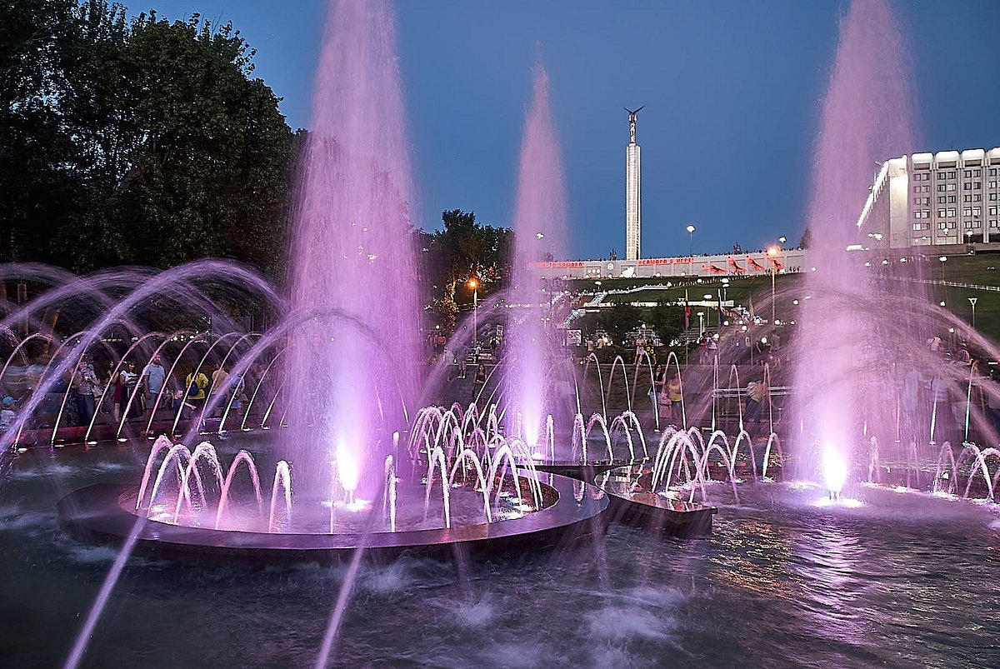 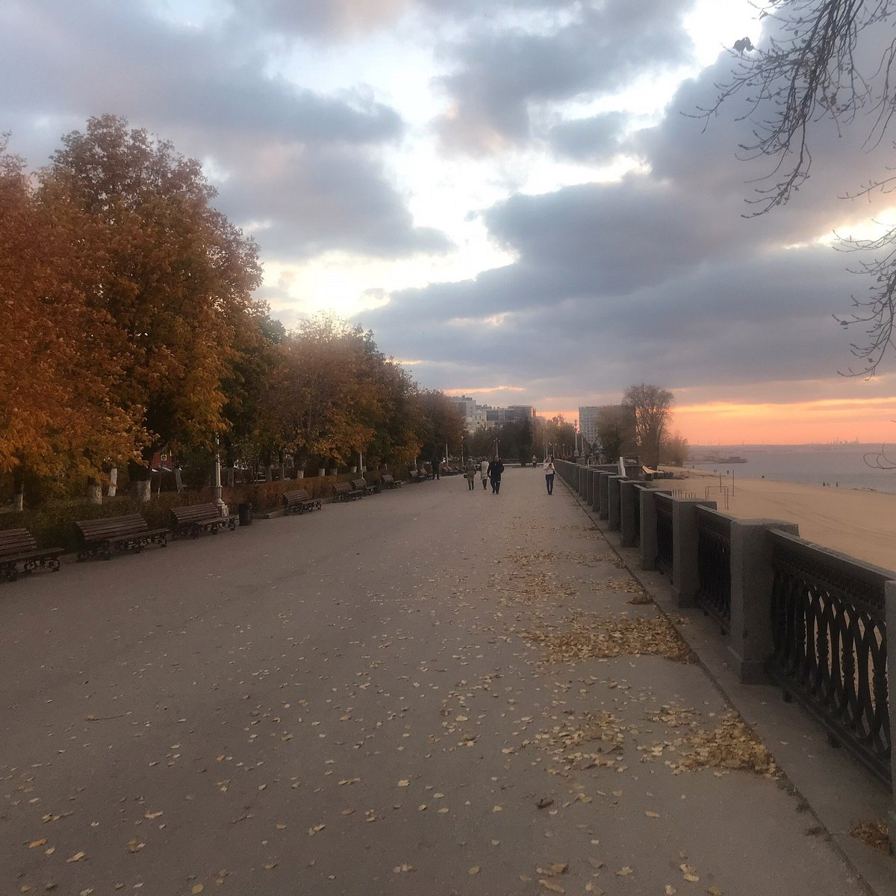 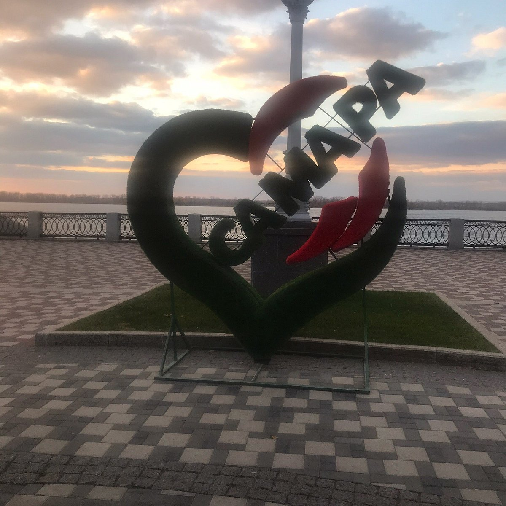 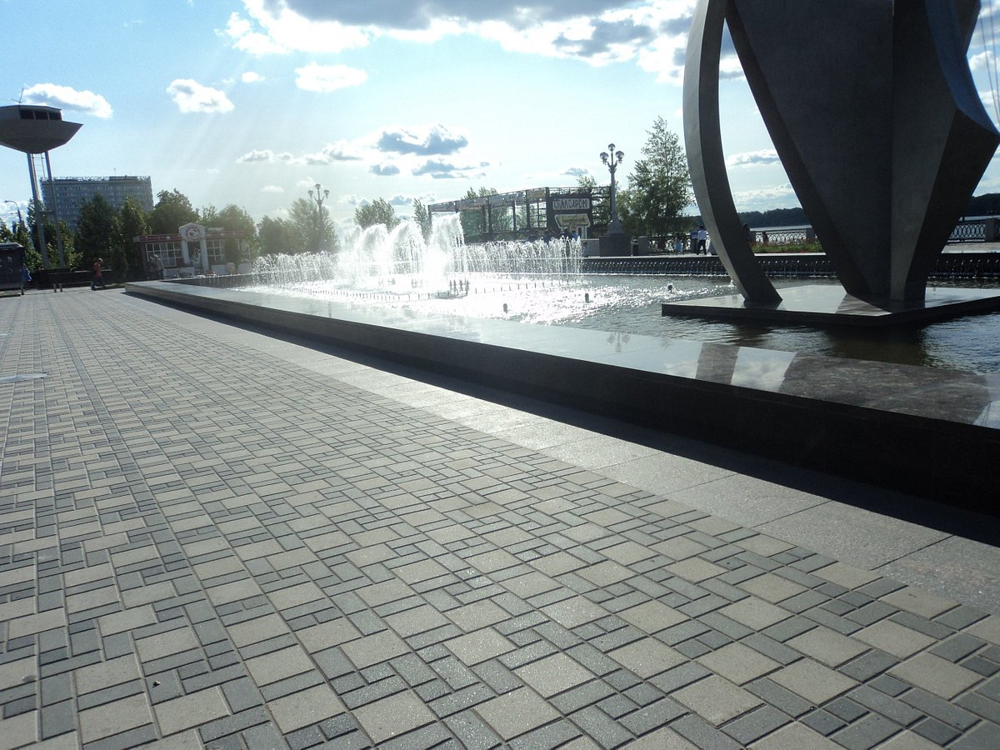Традиционно именно Площадь Куйбышева становится основной новогодней локацией Самары. Массовые «народные гулянья» проходят именно здесь. Кстати, в отличие от многих других городов страны, огромная ёлка на главной площади Самары появляется задолго до Нового года - уже в середине декабря…
 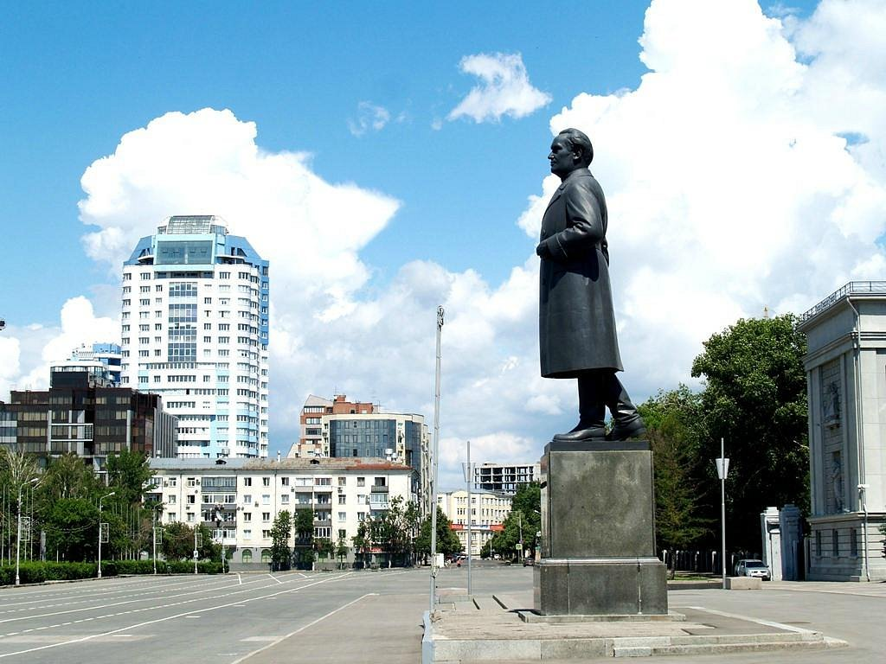
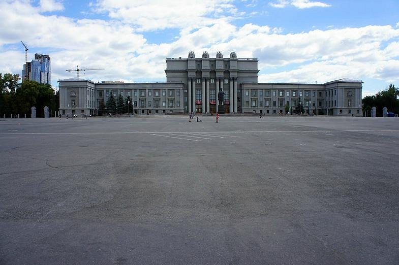
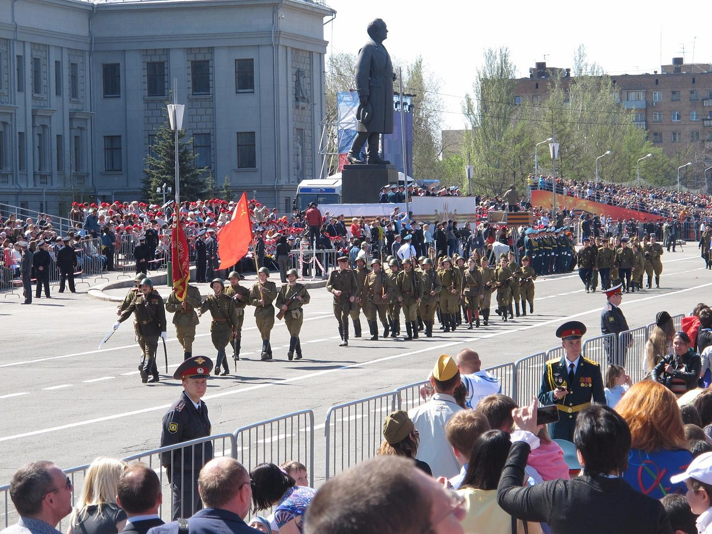
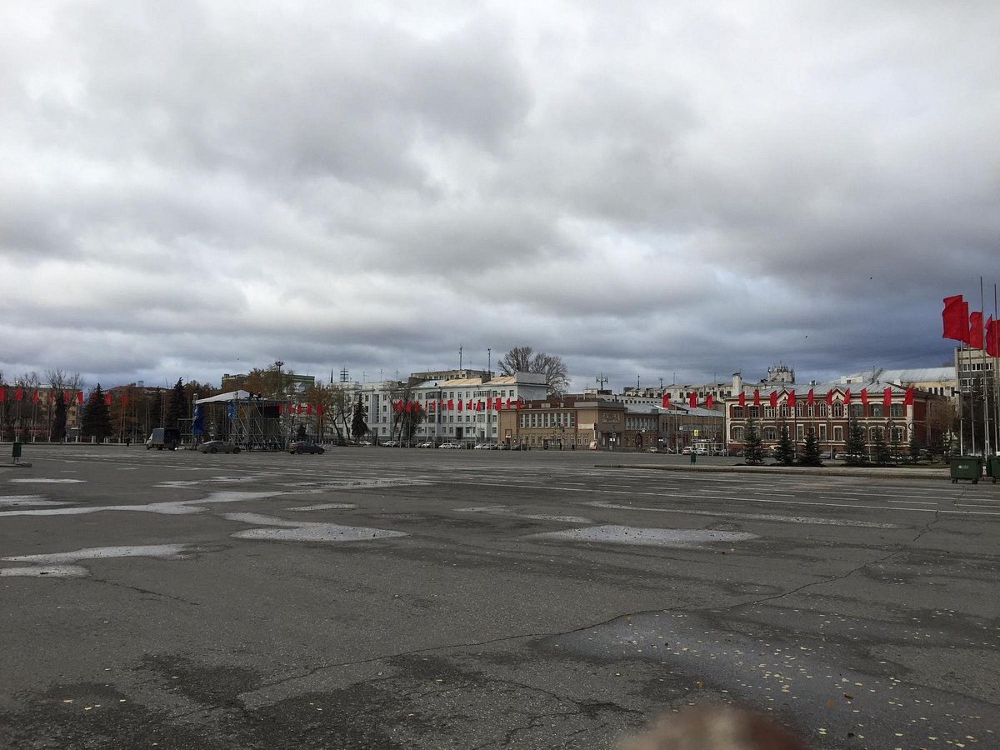
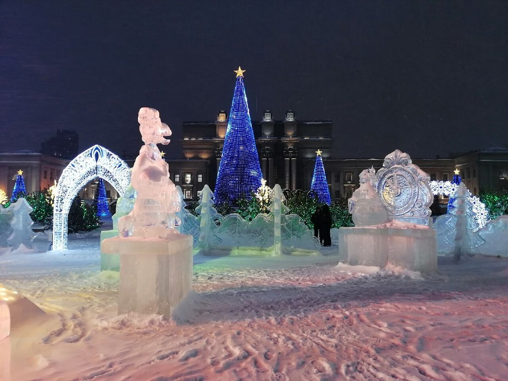
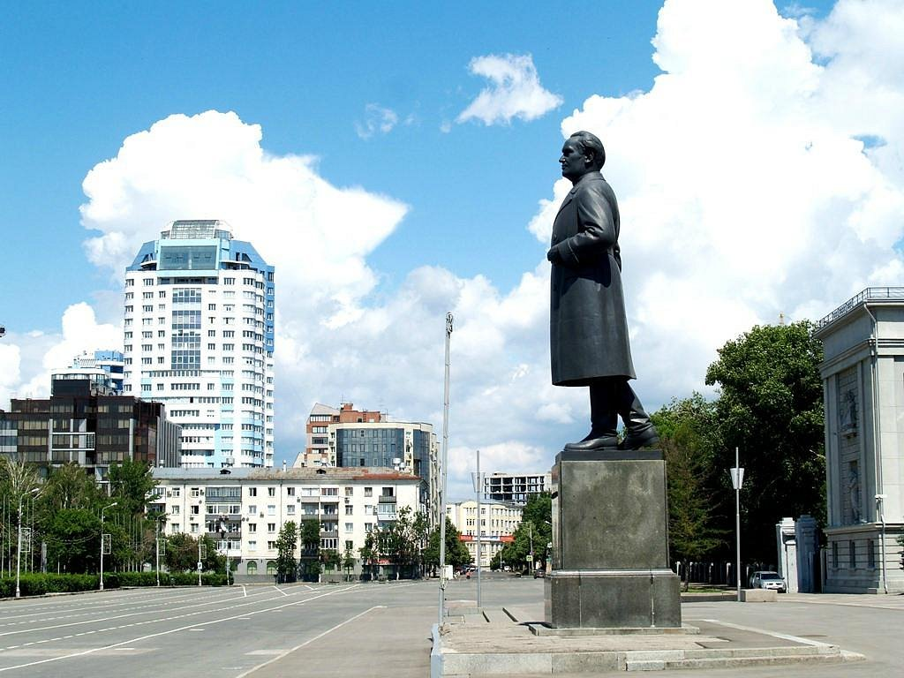
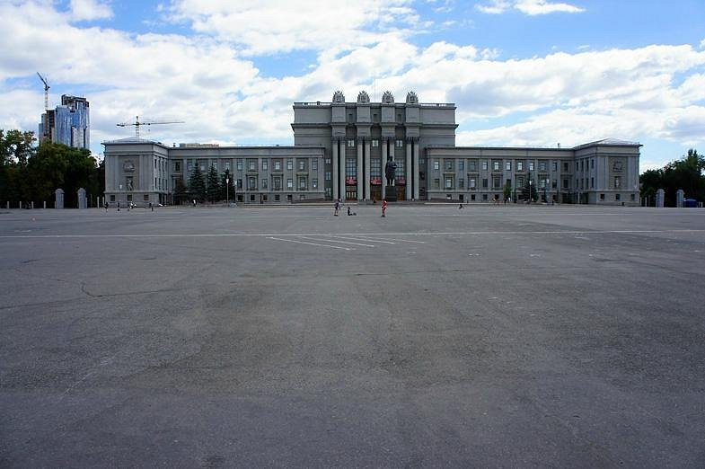
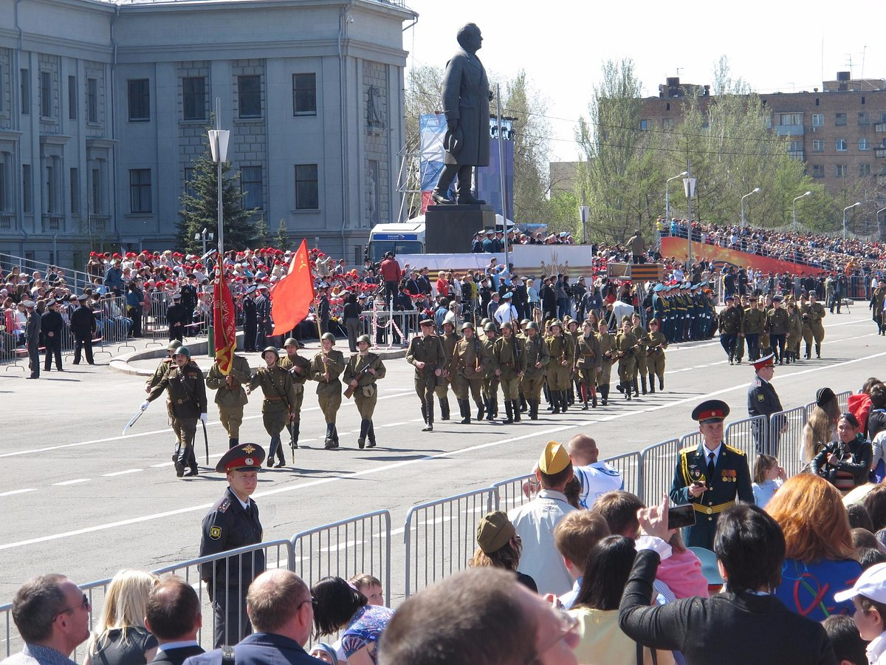
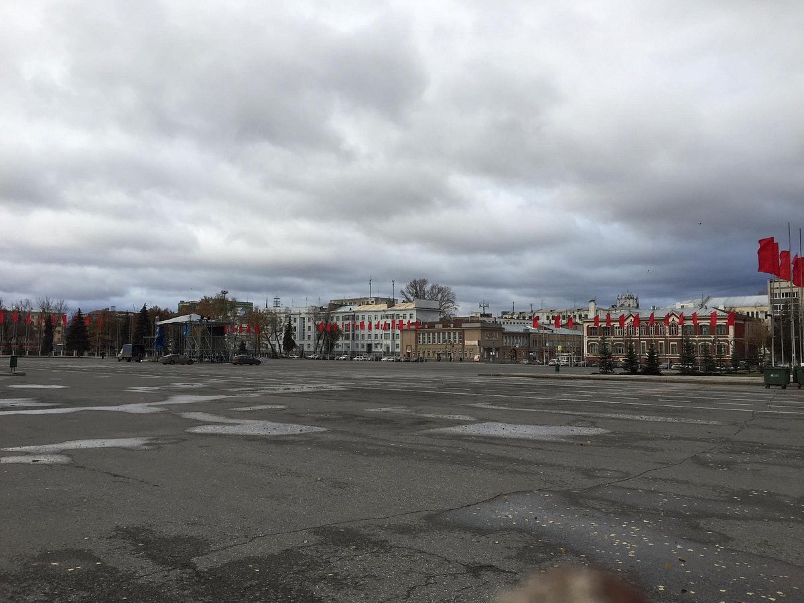
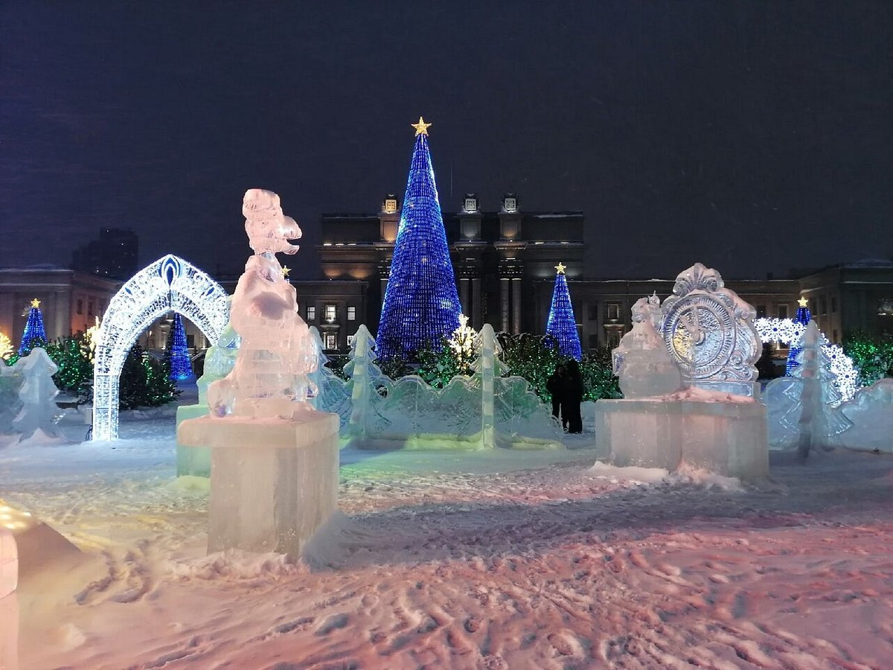